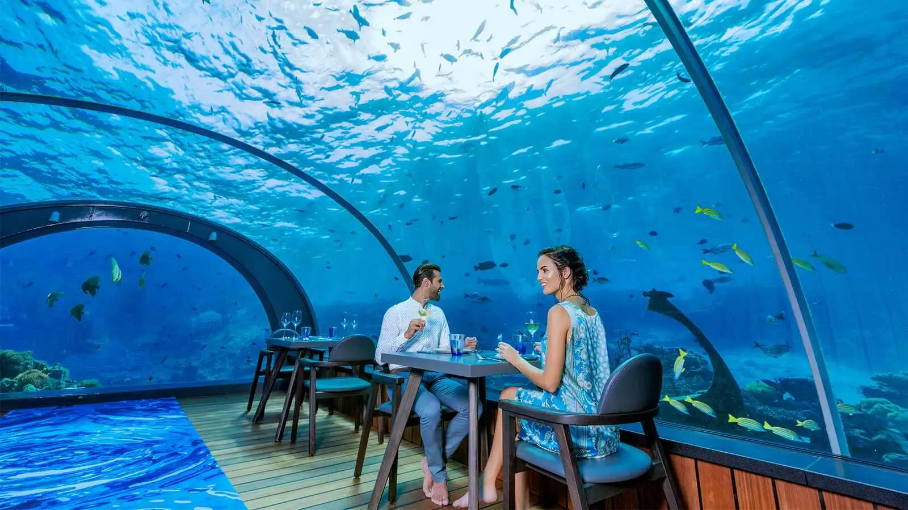
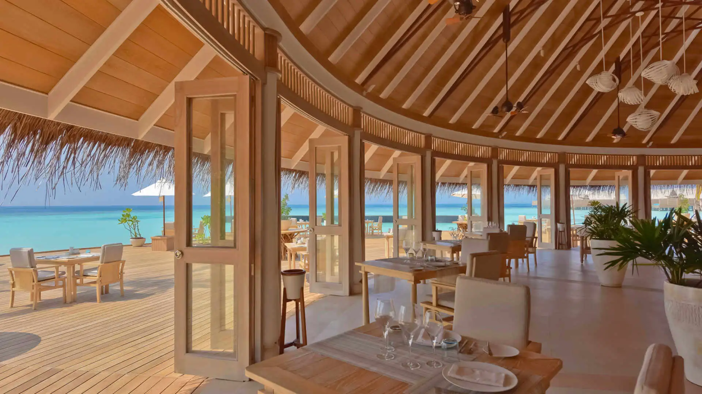
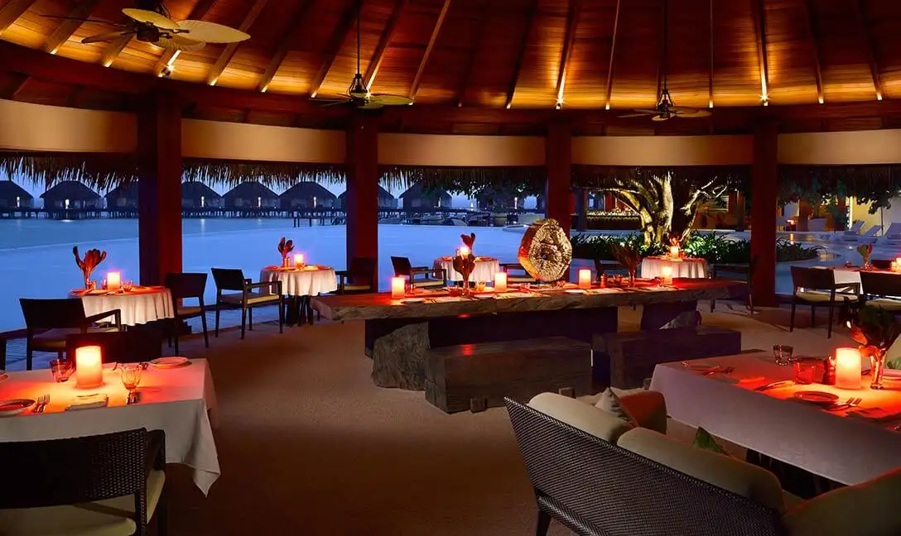

Maldives
The Sunny Side of Life
“The Restaurant at the End of the Universe is one of the most extraordinary ventures in the entire
history of catering. It has been built on the fragmented remains of…it will be built on the
fragmented..that is to say it will have been built by
this time, and indeed has been –”
CONRAD MALDIVES
Conrad Maldives Rangali Island, which is the worlds first underwater dining experience. It enhances stay with private dining, intuitive service and luxurious delicacies.
THE SPICE
The Spice restaurant at Atmosphere Kanifushi, Kanifushi Island provides the most affordable and they do not compromise on their services.
PEBBLES BY ROYAL

Pebbles by Royal is located at the famous and beautiful Thoondu beach of the island. This is a perfect place to sit and relax and enjoy the food with view of sunset.
THE MARKET
The Market restaurant that is at the end of the island, offers a sea side view. They also prefer Borderless Dining which allows he guests to dine privately.